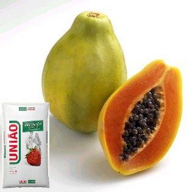

Isso é mamão com açúcar”, provavelmente você já ouviu essa expressão quando alguém quer dizer que algo é muito fácil, baseia-se na ideia geral de que basta um simples doce de mamão com açúcar para agradar aos paladares, não existem grandes segredos ai. Quando paro pra pensar nisso, vejo o quanto é fácil mesmo agradar o paladar da maioria das pessoas com mamão
O mamão também é fonte de cálcio, fósforo, ferro, sódio e potássio, com destaque para a vitamina C, — uma porção (1 fatia caprichada) oferece, a grosso modo, 100% das recomendações diárias desse nutriente. A vitamina C, além de ter ação antioxidante, é importante para proteger o organismo de infecções.
No Brasil, o cultivo de mamão é bem comum. É possível encontrar vários tipos da fruta, mas os mais consumidos são o mamão papaia e o mamão formosa. Além de saboroso, ele é rico em diversos nutrientes importantes para nossa alimentação
O mamão é uma fruta extremamente nutritiva: possui mais de 80% de água em sua composição e é capaz de proporcionar benefícios para o corpo inteiro.
